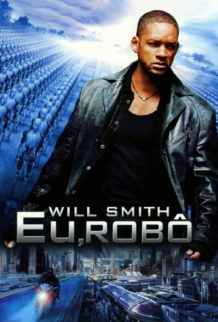

I, Robot (bra: Eu, Robô; prt: Eu, Robot) é um filme americano de 2004, dos gêneros ação, suspense e ficção científica, dirigido por Alex Proyas para a 20th Century Fox, com roteiro baseado em vários contos do livro homônimo de Isaac Asimov.
Título original: I, Robot
Ano: 2004
Duração: 1h 55min
Gênero: Ação, Ficção Científica
Direção: Alex Proyas
Roteiro: Jeff Vintar, Akiva Goldsman
Elenco: Will Smith, Alan Tudyk, Bridget Moynahan
Um robô não pode ferir um ser humano ou, por inação, permitir que um ser humano sofra algum mal.
Um robô deve obedecer às ordens que lhe sejam dadas por seres humanos, exceto nos casos em que entrem em conflito com a Primeira Lei.
Um robô deve proteger sua própria existência, desde que tal proteção não entre em conflito com a Primeira ou Segunda Leis.
As Três Leis da Robótica foram idealizadas pelo escritor Isaac Asimov a fim de permitir o controle e limitar os comportamentos dos robôs que este trazia à existência em seus livros de ficção científica.
Asimov foi um prolífico escritor não apenas de ficção científica mas também de obras científicas, publicando ao todo mais de 500 livros e contos ao longo dos seus 52 anos de carreira; entre eles incluindo-se "Eu, Robô" e "Manual de Robótica, 56 Edição, 2058 d.C.".

O filme I, Robot originalmente não tinha ligações com Série Robôs de Isaac Asimov. Tudo começou com um roteiro original escrito em 1995 por Jeff Vintar, intitulado Hardwired. O script era sobre um misterioso assassinato inspirado nas histórias de Agatha Christie que se focava inteiramente na cena de um crime, com um personagem humano solitário, o agente do FBI Del Spooner, que investiga o assassinato de um cientista recluso chamado Dr Hogenmiller, e interrogar um elenco de de máquinas suspeitas que incluem Sonny, o robô, HECTOR o supercomputador com um smiley, o holograma de Dr Hogenmiller, além de vários outros exemplos de inteligência artificial.


O projeto foi adquirido pela primeira vez pela Walt Disney Pictures para Bryan Singer para dirigir. Vários anos mais tarde, a 20th Century Fox adquiriu os direitos, e escalou Alex Proyas como diretor. Jeff Vintar foi trazido de volta no projeto . Quando o estúdio decidiu usar o nome de "I, Robot", ele incorporou as Três Leis da Robótica, e substituiu seu personagem principal feminino pela Dra. Susan Calvin, um dos poucos personagens recorrentes da série de Asimov. O livro I, Robot de Isaac Asimov uma coletânea de contos; mas o novo roteiro incorporou muitos elementos de outra história da série, The Caves of Steel, um mistério de assassinato envolvendo um robô e um policial. Akiva Goldsman foi contratado no final do processo de reescrever o roteiro para Will Smith.
Já o livro I, Robot (em português Eu, Robô) é uma coletânea literária de contos escrita pelo russo Isaac Asimov. O livro é composto de 10 contos que, de forma sucessiva, discorrem sobre a evolução dos robôs através do tempo.
A obra se inicia com o conto intitulado "Robbie", um robô-babá incapaz de falar que é discriminado e repudiado pelas pessoas da Terra, resultando na proibição do uso de robôs no planeta.
"Eu, robô" culmina no último conto, no qual a Terra é governada pelo "Coordenador Mundial" Stephen Byerley (sob o qual pairam suspeitas de ser um robô) que administra a Terra através do uso de 4 "máquinas" que ditam o funcionamento da produção, consumo e emprego da mão-de-obra.
Mas engana-se quem imagina que Asimov seja o autor da primeira 'I, Robot' Escrita. O título "Eu, Robô" não foi criado por Asimov. Ele foi sugerido pelo editor de Asimov, John W. Campbell, inspirado em um conto de ficção científica homônimo escrito por Eando Binder (pseudônimo de Earl e Otto Binder) em 1939.
O conto original "Eu, Robô" (1939) de Eando Binder (pseudônimo dos irmãos Earl e Otto Binder) é bem diferente da obra de Isaac Asimov, apesar de compartilharem o mesmo título. Ele é uma história de ficção científica emocional e reflexiva sobre a relação entre humanos e robôs, explorando temas como a humanidade e a consciência robótica de uma forma mais pessoal.
O "Eu, Robô" de Eando Binder foi um precursor no tema dos robôs com consciência e sentimentos, abordando questões de preconceito e o que significa ser humano. Embora muitas vezes ofuscado pela obra posterior de Asimov, o conto de Binder permanece um marco importante na evolução da ficção científica, abrindo caminho para debates profundos sobre a humanidade e a tecnologia.